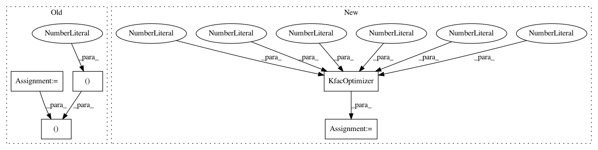

c6c0f45cb179f022b02f0b3021dd77e1f0ebea05,baselines/acktr/value_functions.py,NeuralNetValueFunction,__init__,#NeuralNetValueFunction#Any#Any#,10
Before Change
loss = tf.reduce_mean(tf.square(vpred_n - vtarg_n)) + tf.add_n(wd_loss)
loss_sampled = tf.reduce_mean(tf.square(vpred_n - tf.stop_gradient(sample_vpred_n)))
self._predict = U.function([X], vpred_n)
optim = kfac.KfacOptimizer(learning_rate=0.001, cold_lr=0.001*(1-0.9), momentum=0.9, \
clip_kl=0.3, epsilon=0.1, stats_decay=0.95, \
async=1, kfac_update=2, cold_iter=50, \
weight_decay_dict=wd_dict, max_grad_norm=None)
vf_var_list = []
for var in tf.trainable_variables():
if "vf" in var.name:
After Change
loss = tf.reduce_mean(tf.square(vpred_n - vtarg_n)) + tf.add_n(wd_loss)
loss_sampled = tf.reduce_mean(tf.square(vpred_n - tf.stop_gradient(sample_vpred_n)))
self._predict = U.function([X], vpred_n)
optim = kfac.KfacOptimizer(learning_rate=0.001, cold_lr=0.001*(1-0.9), momentum=0.9, \
clip_kl=0.3, epsilon=0.1, stats_decay=0.95, \
async_=1, kfac_update=2, cold_iter=50, \
weight_decay_dict=wd_dict, max_grad_norm=None)
vf_var_list = []
for var in tf.trainable_variables():
if "vf" in var.name:
vf_var_list.append(var)
In pattern: SUPERPATTERN
Frequency: 3
Non-data size: 5
Instances
Project Name: openai/baselines
Commit Name: c6c0f45cb179f022b02f0b3021dd77e1f0ebea05
Time: 2018-08-27
Author: wsjsmlxg@gmail.com
File Name: baselines/acktr/value_functions.py
Class Name: NeuralNetValueFunction
Method Name: __init__
Project Name: openai/baselines
Commit Name: c6c0f45cb179f022b02f0b3021dd77e1f0ebea05
Time: 2018-08-27
Author: wsjsmlxg@gmail.com
File Name: baselines/acktr/acktr_disc.py
Class Name: Model
Method Name: __init__
Project Name: openai/baselines
Commit Name: c6c0f45cb179f022b02f0b3021dd77e1f0ebea05
Time: 2018-08-27
Author: wsjsmlxg@gmail.com
File Name: baselines/acktr/acktr_cont.py
Class Name:
Method Name: learn